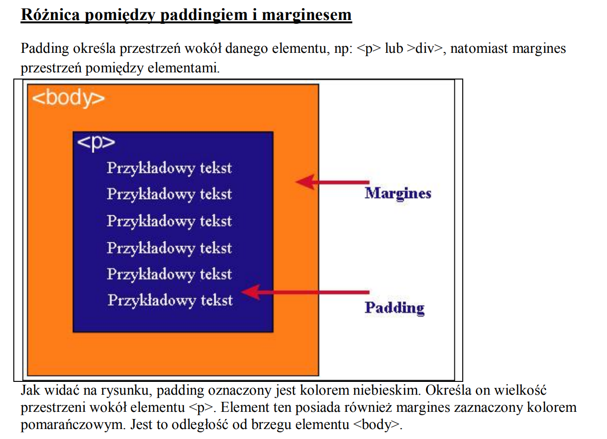

Czym jest model pudełkowy?
Każdy element w dokumencie HTML, otacza się prostokątnym obszarem zwanym pudełkiem
(ang. Box model). Pudełko składa się z kilku warstw
| zawartosc |
Opis |
| content |
zawartość elementu (np.: tekst, obrazek) |
| padding |
otaczające marginesy wewnętrzne, odstęp między obramowaniem i
zawartością elementu
|
| border |
obramowania wokół zawartości elementu, ma styl i kolor. |
| margin |
marginesy wokół ramki (margines zewnętrzny). Jest to pusty obszar wokół
ramki, który nie ma koloru tła i jest przeźroczysty. |
Uwagi na temat modelu pudełkowego:
- 1) Padding, border i margin mogą mieć zerową wartość.
- 2)Tło elementu jest określone dla wszystkich z podanych powyżej obszarów z wyjątkiem
marginesów zewnętrznych, które zawsze są przezroczyste (transparent).
